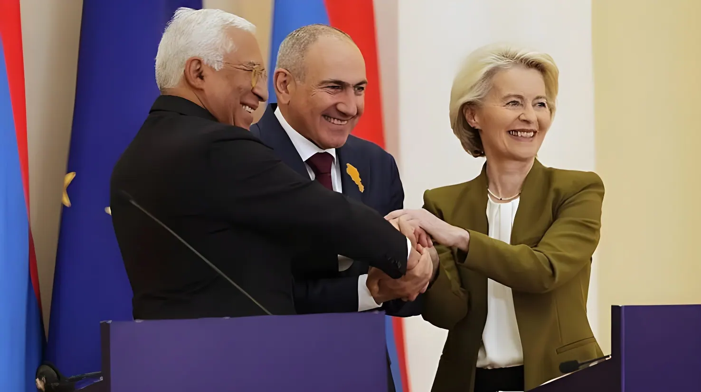

Le 7 juin 2026, les Arméniens ont tranché : Nikol Pachinian et son parti Contrat civil remportent les élections législatives avec 49,8 % des voix, confortant le pivot géopolitique du pays vers l'Occident. Un scrutin sous haute tension, marqué par une ingérence russe documentée par l'OSCE et une opposition pro-russe en embuscade — mais finalement battue. L'Arménie choisit l'Europe, sans pour autant couper les ponts avec Moscou.
Ces élections législatives du 7 juin 2026 sont les premières élections ordinaires — non anticipées — organisées en Arménie depuis 2017. Pachinian les avait présentées comme un choix existentiel : soit poursuivre le rapprochement avec l'Union européenne et entériner la paix difficile avec l'Azerbaïdjan, soit basculer vers une réorientation pro-russe sous la pression d'une opposition nationaliste. Les électeurs ont répondu clairement, avec un taux de participation de 59 %, nettement supérieur aux 49,4 % des législatives anticipées de 2021. Ce regain civique traduit l'intensité des enjeux perçus par la population.
Contrat civil obtient 49,8 % des suffrages, lui permettant selon le système électoral arménien de détenir la majorité absolue à l'Assemblée nationale pour gouverner seul, sans coalition. Son principal adversaire, Arménie forte — parti créé en janvier 2026 par l'oligarque russo-arménien Samvel Karapetian, assigné à résidence depuis 2025 pour accusations de complot contre le gouvernement — recueille 23,3 % des voix. Deux autres forces d'opposition, l'alliance Arménie de l'ex-président Robert Kotcharian et le parti Arménie prospère, obtiennent respectivement 9,9 % et 4 % des voix.
L'OSCE a reconnu que les élections ont offert aux électeurs un véritable choix entre différentes alternatives politiques, tout en relevant des signaux préoccupants. Les observateurs internationaux ont documenté une pression directe de l'étranger — sous la forme de restrictions commerciales russes croissantes et de menaces sécuritaires — visant à influencer les électeurs en faveur de l'opposition pro-russe. Moscou avait en effet adopté des restrictions à l'importation de produits agricoles arméniens dans les semaines précédant le scrutin, et le président Poutine avait évoqué en mai 2026 un « scénario ukrainien » en cas de rapprochement trop poussé d'Erevan avec l'Occident.
Sergueï Kirienko, responsable des opérations d'influence russes dans l'espace post-soviétique, est décrit par la presse arménienne comme ayant coordonné une campagne de désinformation ciblant Contrat civil et l'Alliance arménienne. Malgré ces pressions, les résultats confirment que la stratégie d'intimidation n'a pas produit l'effet escompté. Pachinian a revendiqué « une victoire historique » qui « garantira l'éternité et le développement de l'Arménie ».
« Le peuple arménien a voté pour la prospérité et la coopération régionales, et j'espère que cela suscitera une réponse positive de la part de la Turquie et de l'Azerbaïdjan. »
— Nikol Pachinian, conférence de presse, 8 juin 2026L'opposition n'a pas accepté les résultats sans réserve. Samvel Karapetian a dénoncé des législatives « honteuses », accusant le gouvernement d'avoir procédé à l'arrestation de dizaines de membres de son équipe de campagne. Le Comité d'enquête arménien a de son côté ouvert 59 enquêtes pénales pour violations électorales présumées — dont des cas de vote multiple — et placé neuf personnes en détention. L'OSCE a également relevé que la concentration des arrestations et des poursuites pénales visant des figures de l'opposition a contribué à des perceptions de justice sélective. Ces tensions jettent une ombre sur la légitimité du processus, même si le résultat lui-même ne semble pas contesté dans son ampleur.
Le pivot géopolitique de l'Arménie ne date pas du scrutin de juin 2026 — il s'est construit progressivement depuis la défaite de 2020 face à l'Azerbaïdjan dans la guerre du Karabakh, défaite que Moscou n'a pas empêchée malgré l'alliance militaire formelle liant les deux pays. La reprise définitive du Haut-Karabakh par Bakou en septembre 2023 et l'exode consécutif de quelque 100 000 Arméniens qui y vivaient ont profondément marqué l'opinion publique et alimenté une profonde désillusion à l'égard de la tutelle russe. En mars 2024, l'Arménie a annoncé son intention de déposer une candidature à l'Union européenne ; en 2025, un accord de paix entre Erevan et Bakou, qualifié d'« historique » par Donald Trump qui en a facilité la conclusion lors d'un sommet à Washington en août, a formellement clos le conflit du Karabakh.
Ces évolutions ont cependant creusé des fractures profondes. Des manifestations importantes avaient agité Erevan en 2024, menées par l'archevêque Bagrat Galstanian, contre la perspective de concessions territoriales à l'Azerbaïdjan. En juin 2025, Pachinian a annoncé le déjouement d'un complot présumé qu'il a attribué au « clergé criminel oligarchique » — 16 suspects poursuivis, dont Galstanian lui-même et Karapetian, qu'il accuse d'avoir planifié un coup d'État pour le 21 septembre 2025. Des accusations que les intéressés rejettent.
Malgré sa victoire nette, Pachinian échoue à s'assurer la majorité des deux tiers à l'Assemblée nationale, indispensable pour modifier la Constitution. Or l'Azerbaïdjan a posé cette révision constitutionnelle comme condition préalable à tout accord de paix définitif, exigeant la suppression des références au Karabakh dans le texte fondamental arménien. Cette limite arithmétique contraint Pachinian à chercher des compromis, voire à remettre à plus tard une normalisation complète avec Bakou. La Turquie, alliée de l'Azerbaïdjan, a elle-même appelé l'Arménie à aller plus loin sur la voie de la paix — tandis que les relations arméno-turques demeurent empoisonnées par la question du génocide de 1915.
Par ailleurs, Pachinian a pris soin de préciser qu'il entendait développer les relations avec la Russie tout en poursuivant le rapprochement occidental. Une double rhétorique qui reflète l'équilibre délicat d'un pays encore officiellement membre de l'Organisation du traité de sécurité collective (OTSC), malgré sa décision de quitter cette alliance en 2024 — un retrait non encore formalisé à la date du scrutin.
L'Azerbaïdjan reprend militairement le Haut-Karabakh. Quelque 100 000 Arméniens fuient l'enclave. La Russie n'intervient pas malgré l'alliance formelle, nourrissant la rupture de confiance avec Moscou.
Erevan annonce son intention de candidater à l'Union européenne, puis sa décision de quitter l'OTSC — restant néanmoins membre de fait lors du scrutin de 2026.
Accord de paix arméno-azerbaïdjanais signé lors d'un sommet facilité par Donald Trump, qualifié d'« historique ». Il ne règle pas la question des amendements constitutionnels réclamés par Bakou.
Pachinian annonce le déjouement d'un complot présumé. L'archevêque Galstanian et l'oligarque Karapetian sont arrêtés. Seize suspects poursuivis pour complot contre le gouvernement.
Poutine évoque un « scénario ukrainien » pour l'Arménie. La Russie impose des restrictions commerciales agricoles. Moscou tente d'influencer le scrutin via des campagnes de désinformation.
Élections législatives. Contrat civil remporte 49,8 % des voix (72 sièges sur 107). Participation record de 59 %. Pachinian revendique une « victoire historique ». L'opposition dénonce la répression et un scrutin « honteux ».
La victoire de Pachinian dépasse le seul cadre arménien. Elle illustre le recul progressif de l'influence russe dans une région que Moscou considérait comme son pré carré depuis la dissolution de l'URSS. Après la Géorgie et ses turbulences pro-européennes, après le pivot moldave, l'Arménie — l'alliée la plus ancienne de Moscou dans le Caucase — choisit à son tour de regarder vers Bruxelles. Mais ce basculement reste fragile : limité par l'absence de majorité constitutionnelle, conditionné à une paix définitive avec Bakou, et contraint par une dépendance économique à la Russie qui ne s'efface pas par un seul vote. L'Arménie a choisi sa direction — la route qui y mène sera longue.